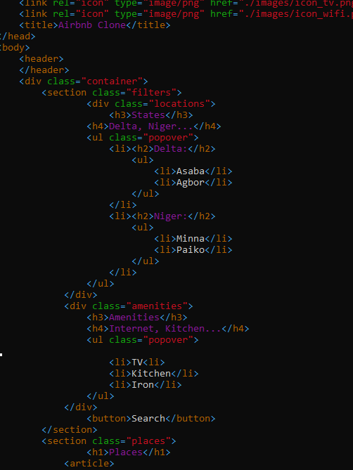

Frontend Development
We create websites and applications using web languages such as HTML, CSS, and JavaScript that allow users to access and interact with the site or app and also make a user interface (UI) that determines what each part ofsuch site or application does and how it will look.

Some of our Hyper Text Markup Language sample code use in some frontend development

Some of our Cascading Style Sheet sample code for frontend development
Our Responsibilities
- We use markup languages like HTML to create user-friendly web pages
- We maintain and improve websites
- Optimize applications for most extreme speed with our fast nginx servers
- Work together with web architects and back-end developers to improve usability.
- Help back-end developers with coding and troubleshooting
Backend Development
We write the code that serves as the foundation of a website or app, as well as the algorithms that process data and carry out operations on websites.
Some of our python sample code for backend development
We also create and oversee testing schedules to optimize user interface and experience, ensuring optimal display on various browsers and devices.
We assess its performance and scalability, of websites and also adjust code as necessary.
Full Stack Development
A Well Configured Nginx, Apache and Mysql servers
We develop and configure different web servers like Nginx and Apache and Mysql which can be used to host multiple websites with faster speed regardless the traffic.
Data Science and Analysis
Gather a lot of data, sort through this one, and then use tools like SAS, R programming, Python, etc. to extract insights that could be applied to boost the production and efficiency of the company.